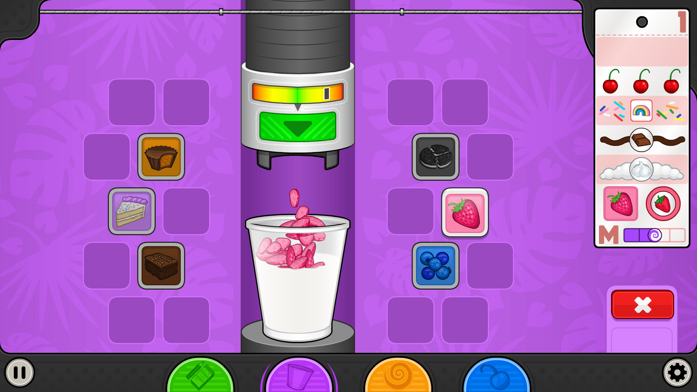
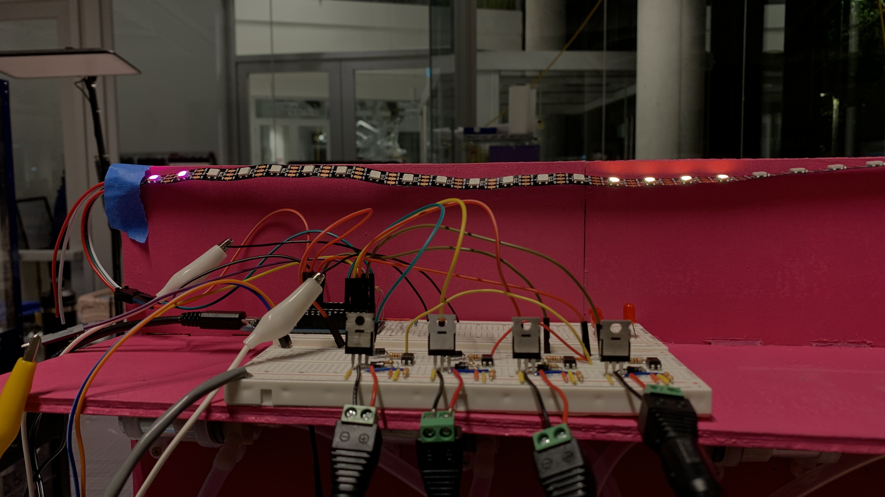
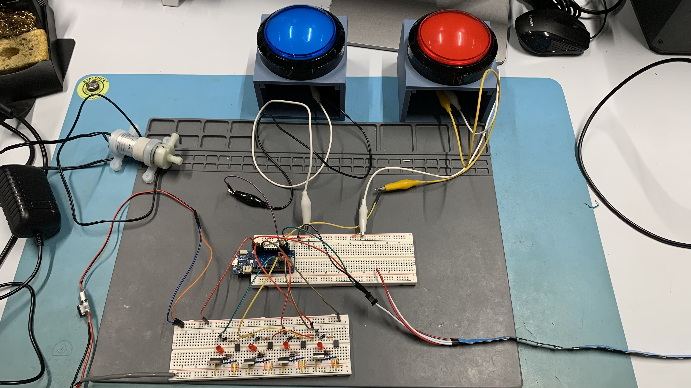
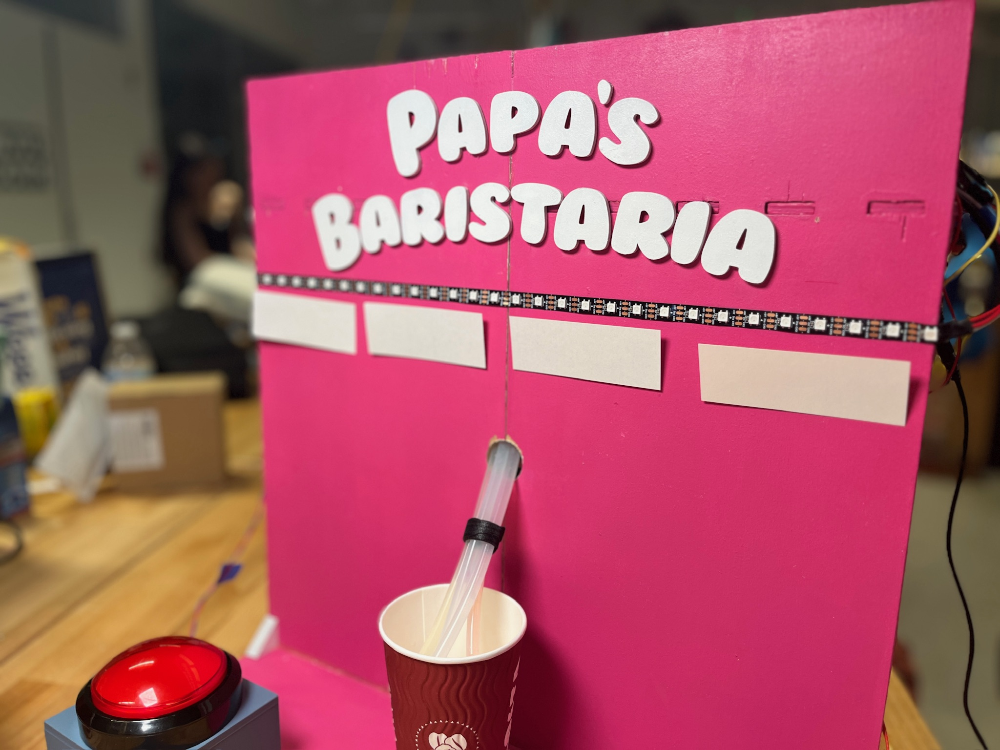
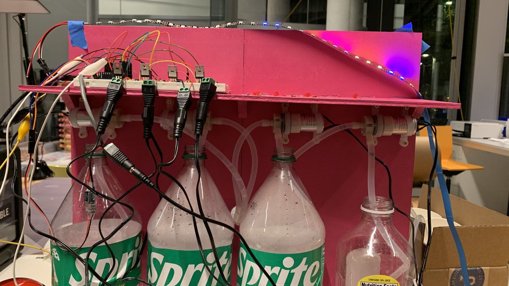

Problem Statement

Papa's Freezeria inspiration
Create a real-life version of the Papa Louie games with two
phases:
1. Two players compete to fill up their half of an LED strip
first, with 3 button presses lighting up one LED
2. The winner then stops an oscillating LED pattern to select
a drink to be dispensed.
Ideas and Prototyping

LED strip testing

Overall circuit
We experimented a lot with how the LED visuals would look, testing out the following features and options:
- Section of 15 lights with green in the middle and two other colors on the outside moving back and forth. The location of the middle green upon stopping indicates the selected drink.
- One color for each drink section. Flash lights back and forth so that the end of the lit section is what moves rather than a small section of lights. The location of the end of the lit section upon stopping indicates the selected drink.
- Start off with fast movement, then slow down gradually to lower difficulty, matching the style of Papa's Freezeria.
Challenges
- We needed to figure out game logic to make sure that only the winner of the first section would be able to play the game and to make sure that we could reset the game properly each time.
- Each reset of the Arduino would send an initial voltage to the pumps, resulting in some messy situations.
Results

Front view

Back view
Fun little game with a mix of competition, nostalgia, and yummy drinks!
Improvements we would implement for the future:
- Try to adjust the speed of dispensing and control how much is dispensed based on how fast the player reacted.
- Resolve the challenge of pumps turning on each time Arduino was reset.